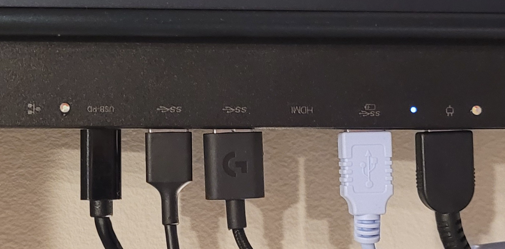
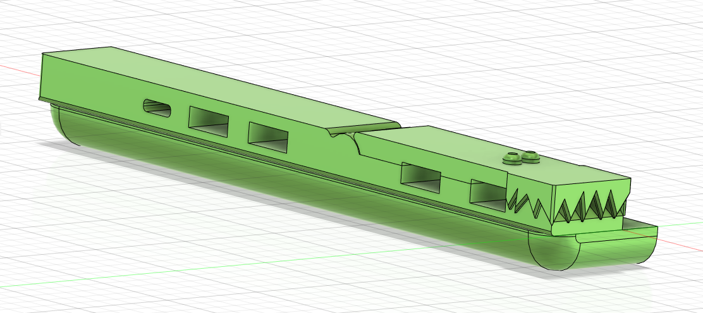
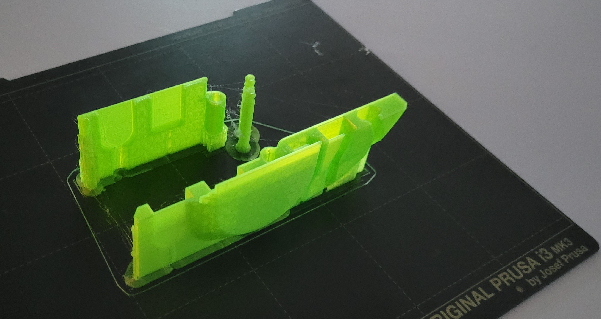
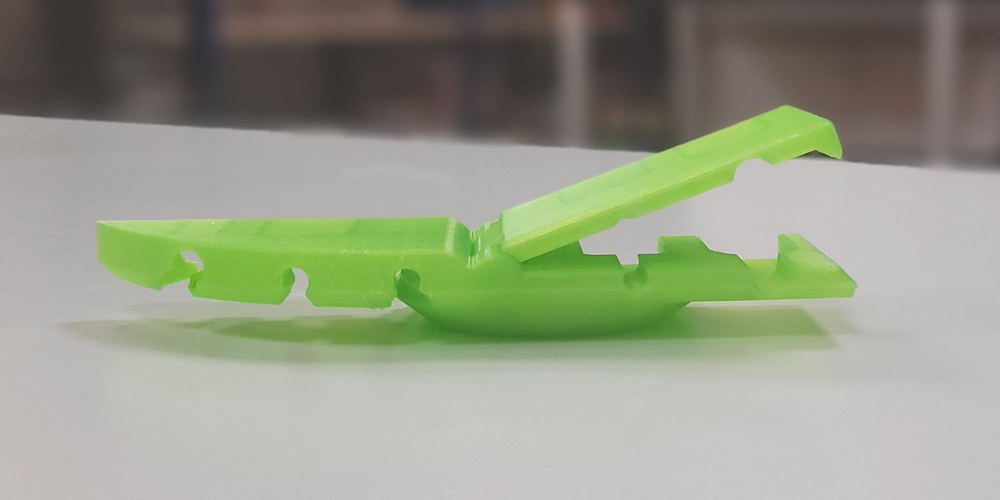
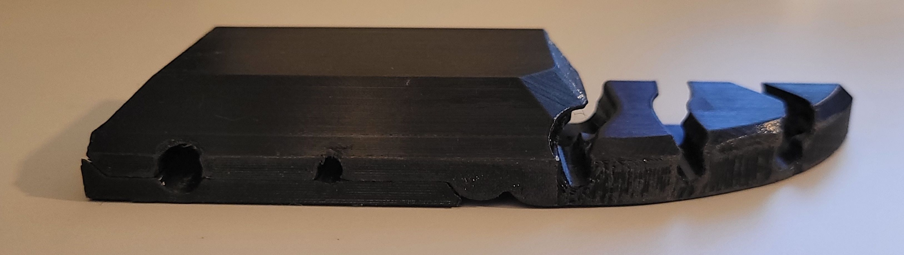
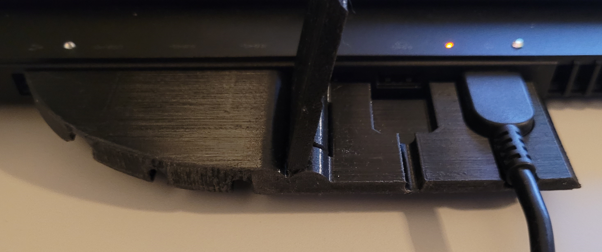

Oppgave 2
3D-modellering og -printing: crockDOCK
En ledningsholder / dock tilpasset min egen data, med plass til 3 semipermanente og to lett uttakbare ledninger.
Hvorfor?
Oppgaven hadde sitt utspring i ønsket mitt om å lage en ultimat dock tilpasset ledningene jeg kobler i laptopen min når jeg setter den opp hjemme. Jeg har 3 som jeg alltid kobler til; skjerm, hodetelefoner og tastatur, mens laderen og en USB-inngang byttes ut ofte.
Hvordan?
I utgangspunktet tenkte jeg noe som er ca 160 mm langt og 20 mm cm bredt, men jeg ville finne en løsning som gjør at de ledningene jeg putter inni forblir på sin plass, som gjorde at jeg endret mål til 40 mm i bredden. Jeg målte opp med det jeg hadde av verktøy tilgjengelig og la inn bilde av dataen min for å putte portene relativt til hverandre.
1. utkast
Jeg satt i gang med å opprette en fil i Fusion 360 og lærte meg mange ulike verktøy, og fikk sakte men sikkert alt på plass. For å tilpasse produktet til de ledningene som byttes ut tenkte jeg å lage et ledd som kan åpnes. Det førte til at jeg kom til å tenke på en krokodillemunn og jeg navnga prosjektet crocDOCK. Til den endelige versjonen ønsker jeg å kunne lukke “munnen” og få det til å avgi en lyd og respons av at det ble ordentlig lukket.
Det var visse aspekter av oppgaven som var veldig vanskelige å få til, og Fusion hadde en bratt læringskurve, men til slutt gikk det bra. Noe som var ekstra morsomt var å kunne lage et bevegelig ledd av komponentene og vise animasjonen av leddet slik den skal se ut til slutt. Derfor valgte jeg å gå for en løsning der leddet består av en topp som sitter fast rundt en skrue som er festet i hoveddelen. Dette for å garantere at delene kan lukkes pent og flatt over hverandre etter printing, selv om det hadde vært spennende å få til med print-in-place.

1. prototype
Printet prototype 1 i grønn PLA på Original Prusa i3 MK3S med 0.15 mm tykkelse og 15% infill. La inn automatisk support for alt over 40 grader og lot printen bli utført sideveis. La til en ekstra skrue for sikkerhets skyld og noe brim, siden det er såpass høye og tynne deler. Denne prototypen har som formål å vise meg hvor liten den egentlig er (det er sjokkerende hvor lite noe kan være etter man har stirret på smådetaljer i et oppblåst format på dataen!) og å se den i fargen jeg ønsker å ha den.
 2. prototype
Gjorde et par endringer i modellen som innebar å fjerne en feil jeg hadde oversett ved den ene USB-porten, jevne ut noen kanter og vide ut bunnen og porten til strømledningen. Ønsket å printe prototype 2 i PETG for å ha en print i materialet jeg ønsker på sluttproduktet, som er sterkere og mer varmebestandig, noe som kommer til å bli nødvendig siden crocDOCK skal håndteres daglig og være plassert rett ved viftene på dataen. Prototype 2 ble printet på samme maskin i svart PETG i 0.15 mm og 20% infill. Økte vertical shells litt siden jeg hadde lest at det burde gjøres ved print av skruer og brukte samme innstilling for supports og brim.
 Videre
Forbedringsområder:
- Gjøre at alle ledningene sitter godt fast uten at det går utover styrken på crocDOCK: I det hele tatt få til en høyere profil på modellen som har tekstur som en krokodille med øyne og hale.
- Lukkemekanisme som gir taktil respons.
- Lage en crocDOCK i grønn PETG med print-in-place.